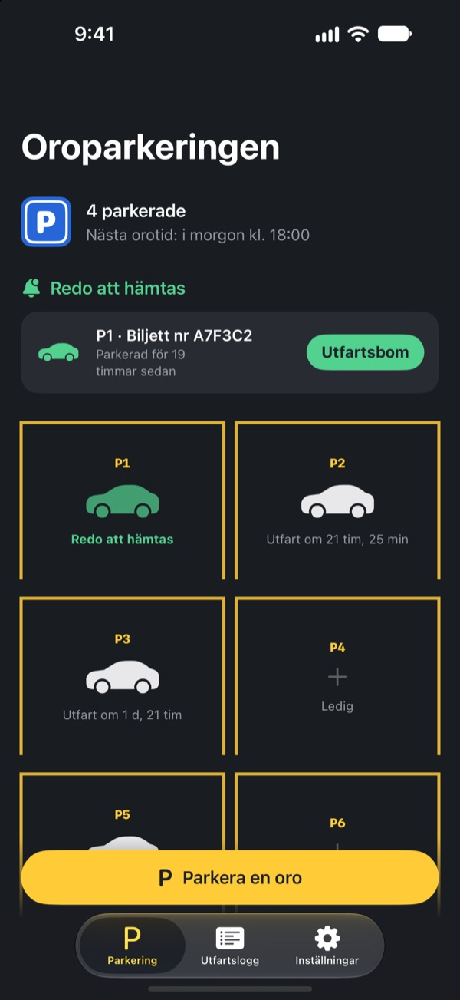
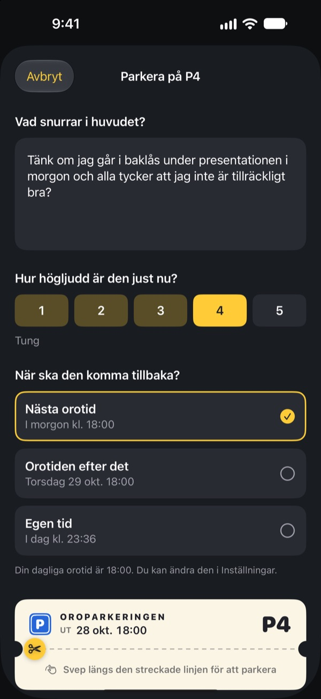
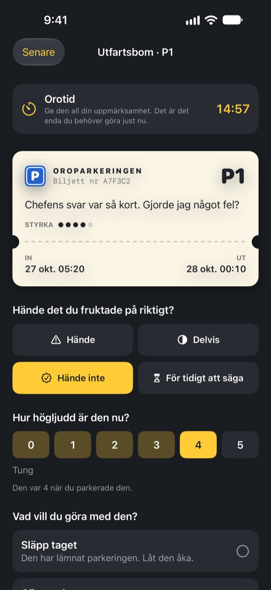
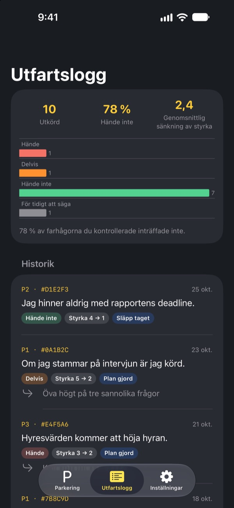

Parkera oron.
Hämta den senare.
Skriv ner det som snurrar i huvudet vid läggdags och lämna det på en parkeringsbiljett. Du får tillbaka det på din orotid. Tills dess behöver du inte bära på det.
Alla funktioner är gratis. Ingen reklam, inget konto.

Parkera en oro
Behåll exemplet eller skriv det som är i ditt huvud just nu. Parkerad blir den suddig, och på orotiden tar du fram den igen.
Lampan släckt, tankarna tända?
Så fort huvudet når kudden sätter det igång: något du sa i dag, mötet i morgon, meddelandet som ingen svarat på. Ju mer du försöker låta bli att tänka, desto högre låter det. Oroparkeringen ber dig inte att knuffa bort oron. Du skriver ner den, ger den en plats och avsätter en tid att ta hand om den.
Nerskriven är den ute ur huvudet
Skriv den precis som den låter i huvudet och ange hur stark den är just nu, från 1 till 5. Riv av biljetten, så står oron kvar på parkeringen, suddig.
Om den kör in i huvudet igen, säg till den: du har redan en plats. Din tid kommer, men inte nu.

15 minuter på orotiden
Varje dag på din orotid får du en påminnelse. Vid utfartsbommen läser du oron igen, kollar om den faktiskt hände och hur stark den är nu.
Sedan släpper du den, gör om den till ett litet nästa steg eller parkerar den till nästa orotid.

Se hur ofta oron fick rätt
Ju fler orosmoln som kört ut, desto tydligare visar utfartsloggen hur många som faktiskt hände och hur mycket styrkan sjönk.
Oro målar ofta upp framtiden värre än den blir. Ju mer du loggar, desto mindre tror du på nästa.

Kom igång i tre steg
- 1
Välj din orotid
Första gången du öppnar appen väljer du när du ska ta hand om din oro varje dag. Du kan ändra det senare i Inställningar.
- 2
Parkera en verklig oro
Parkera direkt något som gnager och känn efter hur styrkan förändras före och efter.
- 3
Tillåt påminnelser om hämtning
På orotiden får du en påminnelse med bara platsnumret.
Varför det fungerar
- Oroa dig bara vid en bestämd tid
- De som flyttade sin oro till en kort daglig stund oroade sig mindre och rapporterade mindre ångest och färre sömnproblem. (Borkovec m.fl., 1983; McGowan & Behar, 2013)
- Skriv ner för att släppa
- En konkret plan hindrade ogjorda uppgifter från att tränga sig in i tankarna, och fem minuters skrivande före sänggåendet hjälpte folk att somna snabbare. (Masicampo & Baumeister, 2011; Scullin m.fl., 2018)
- Kolla vad som faktiskt hände
- När personer med kronisk oro loggade sina orosmoln slog 91 % av dem aldrig in. (LaFreniere & Newman, 2020)
Oroparkeringen bygger på oroskjutning, en teknik från kognitiv beteendeterapi (KBT) som har studerats i årtionden.
Allt är gratis
Gratis
- Obegränsat antal parkeringsplatser
- Dagliga påminnelser på orotiden och egen utfartstid
- Utfartsbom och utfartslogg
- Insikter om utfarter: hur många som hände och hur mycket styrkan sjönk
Dricks, om du vill
- Om appen hjälper kan du ge utvecklaren lite dricks
- Liten, mellan eller stor, som du vill
Dricks låser inte upp något. Utan den fungerar allt likadant.
Ingen reklam, inget konto, inga servrar, inga analysverktyg. Allt du skriver stannar på din iPhone.
Vanliga frågor
Hur ändrar jag min orotid?
Under Orotid på fliken Inställningar. Den nya tiden gäller oro du parkerar från och med då. Redan parkerad oro behåller sin ursprungliga utfartstid.
Jag får inga påminnelser om hämtning.
Kolla Notiser på fliken Inställningar. Om de är avstängda trycker du på Öppna iOS-inställningar och slår på dem. Med fokus eller Stör ej på kan påminnelser komma tyst. Även utan påminnelse visas oro som är dags att hämta som klar på parkeringen.
Syns min oro i notisen?
Nej. Notiser visar bara platsnumret, till exempel ”P3 är klar att hämta”. Själva oron syns först när du öppnar appen och går till utfartsbommen.
Kan jag titta på en oro före orotiden?
Tryck på dess bil på parkeringen och välj Skicka den till utfartsbommen nu. Att skjuta upp fungerar dock bäst om du väntar. De flesta orosmoln känns mindre när orotiden kommer.
Kan jag flytta min logg till en ny iPhone?
Allt sparas bara på din iPhone, utan konto eller synk. Om du återställer en ny iPhone från en säkerhetskopia i iCloud eller på datorn, eller använder Snabbstart, följer loggen med tillsammans med dina andra appar.
Hur raderar jag min logg?
Svep en post åt vänster på fliken Utfartslogg för att radera den. Om du raderar appen försvinner allt.
Är det här en behandling?
Oroparkeringen är ett självhjälpsverktyg som bygger på oroskjutning från KBT. Det är ingen medicinteknisk produkt och ersätter inte professionell diagnos eller behandling.
Vad gör jag om jag mår riktigt dåligt?
Om oron tar över dina dagar eller du tänker på att skada dig själv, bär inte på det ensam. I Sverige kan du ringa 112 vid akut fara, eller Självmordslinjen på 90101.
Frågor eller idéer? Mejla leeo@kakao.com.